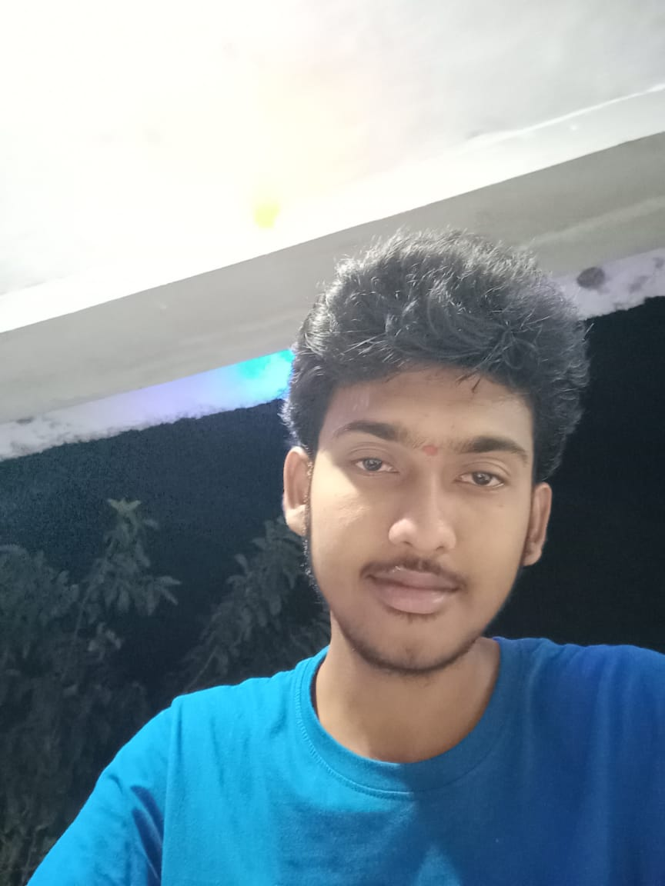

ABOUT MYSELF

Hi,Everone!
I'm Teja are and I'm from Tirupati.I have my Bachelor's of engineering in Electrical And Electronics Engineering from Sri Venkateswara Engineering College,Tirupati.
As per academics, I have done one major project in my final year of engineering and my project is Monitoring And Controlling Of Substation Using IOT by employing every elements
were able to achieve positive results and marked success in our project.
My technical skills include sound knowledge of Java and i have a knowledge on Python.I'm pursuing Full stack Java Web development from Tap Academy Bangalore.
My strengths are I have good leadership skills for eg I have been the Class representative for 3 consecutive years and I'm a quick learner.
My achievement are I got 2nd place in an intercollege technical quiz competition.
My short term goal is to get a job in a reputed company and my long term goal is to achieve a good position where i can build my carrer.
My hobbiess are reading books,listening music and playing cricket.That's all about me.